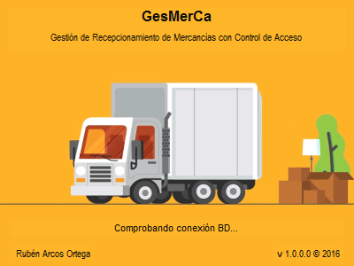
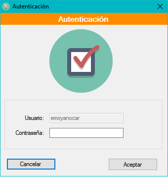
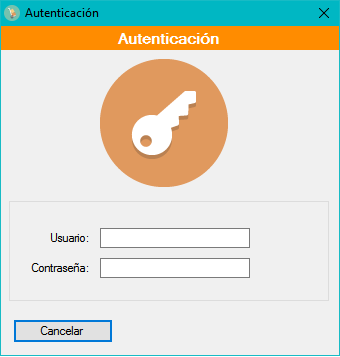

Proyecto integrado
Proyecto integrado fin del Ciclo Formativo de Grado Superior de Aplicaciones Multiplataformas
Presentación y exposición del proyecto
Ejemplo de ejecución




¿Porqué se eligen estos mecanísmos de autenticación?
Documentación completa y diagramas del proyecto
Ejecutable y código fuente
1) Realizar la instalación. 2) Ejecución de GesMerca 2.1) Los credenciales por defecto son:
- Administrador: Uss: admin Pass: admin
- Usuario: Uss: ruben Pass: 123456
- Código de bloqueo del terminal: 5555
3) En la ventana de configuración, una vez iniciada la sesión como administrador, se puede cambiar la forma de realizar el login inicial, tambií©n la configuración personalizada para un usuario concreto, en la misma ventana. Los privilegios se detectarí¡n de forma automática. 4) La conexión a la base de datos estí¡ configurada a una copia de pruebas en la nube por defecto. No obstante, es posible cambiar la configuración en un fichero local.
Content License
Creative Commons 
This web page, all content with proyects and source code, is licensed under Creative Commons: Attribution-NonCommercial-NoDerivatives 4.0 International (CC BY-NC-ND 4.0) More info
Esta página web y todo su contenido, incluido proyectos y código fuente, está licenciado bajo una licencia de Creative Commons: Attribution-NonCommercial-NoDerivatives 4.0 International (CC BY-NC-ND 4.0) Más info